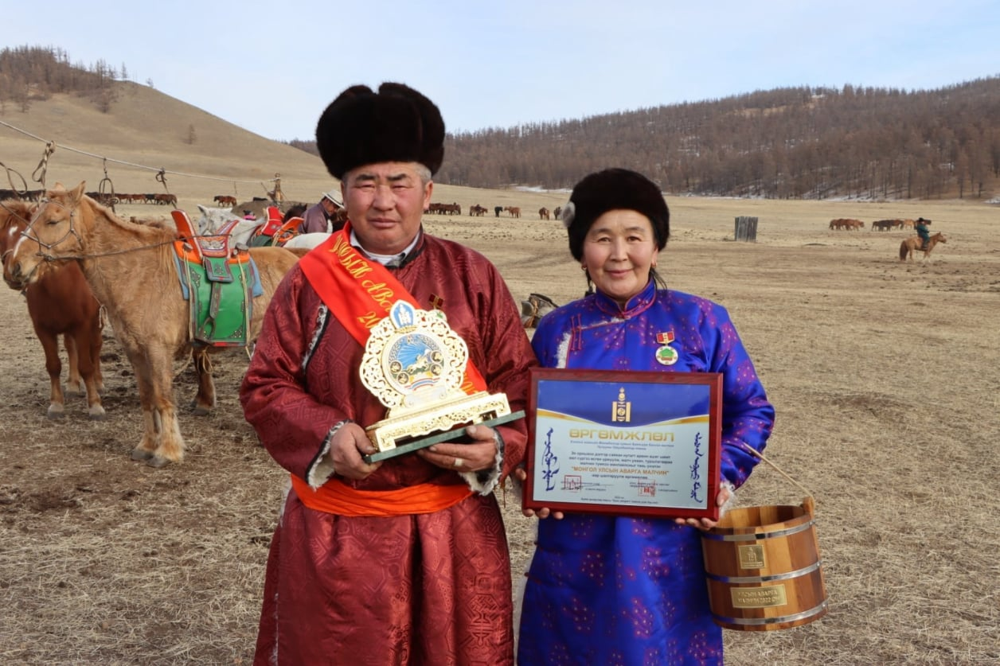
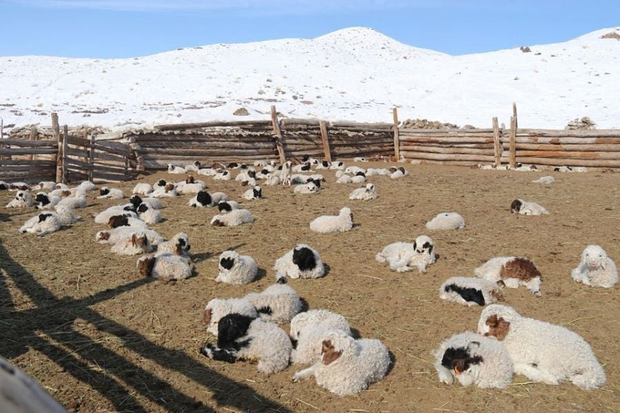
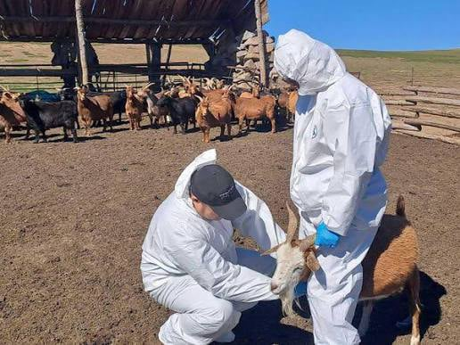
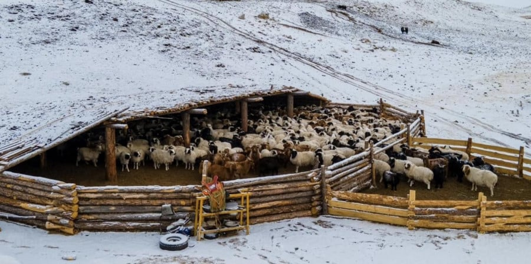
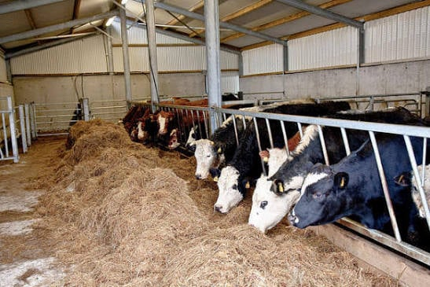
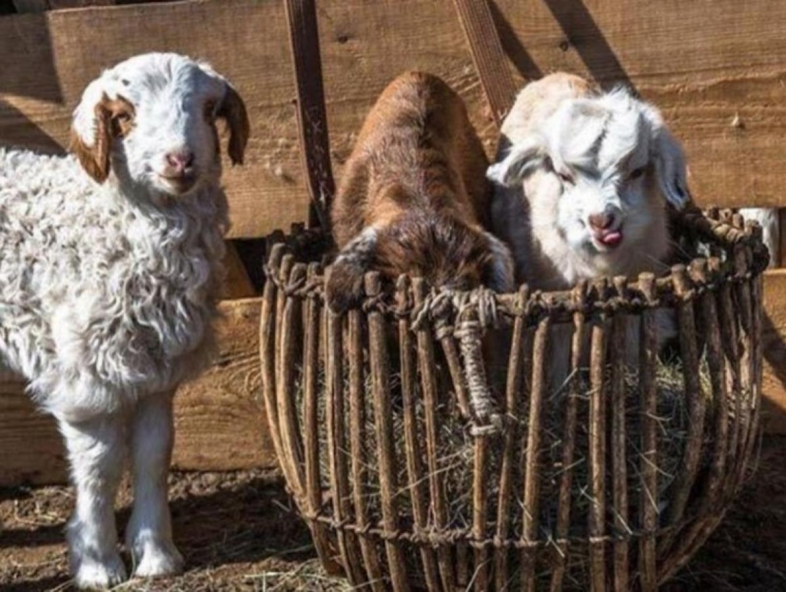

Offline Website Creator
1. Багийн Иргэдийн Нийтийн Хуралдаанаар “БОНБҮ-ний тайлангийн төсөлд хэрхэн утга учиртай санал өгч оролцох” удирдамж 2 гарын авлага, цуврал 3 видео боловсруулсан.
2. Иргэдээс уул уурхайн төсөлд “Байгаль орчин, нийгмийн мониторинг хийх чеклист аргачлал” боловсруулж гарын авлага 2011 онд, 2019/2024 онд уул уурхайн салбарт гардаг байгаль орчны зөрчил маргааныг шийдвэрлэх “Хамтын оролцоотой байгаль орчны мониторинг” аргачлал боловсруулж 6 төсөл дээр туршиж сайжруулсан, цаашид хуулийн өөрчлөлт оруулахаар ажиллаж байна.
3. Компани- нутгийн захиргаа-иргэдийн 3 талт гэрээ байгуулах гарын авлага, аргачлал 2012 онд боловсруулж уул уурхай бүхий 6 аймагт туршсан. 2021 онд Компани -нутгийн захиргаа хамтын ажиллагааны гэрээ байгуулах аргачлал, сургалтын хөтөлбөр, гэрээ батлахын өмнө эрх ашиг нь хөндөгдөх иргэдийн хүсэл зоригийг тусгах Сонсох ажиллагаанд иргэд утга учиртай оролцох нь гарын авлага, видео хичээл 2022 он.
4. Ашигт малтмалын тухай хуульд хамтын ажиллагааны гэрээ байгуулахын өмнө иргэдийн санал авах хэлэлцүүлэг хийх, байгуулсан гэрээг ил тод нээлттэй болгох тухай 42-р зүйлийн 42.2; 42.4 дэх хэсгийн заалтууд нэмэлтээр орсон.
5. Дорноговь аймгийн Айраг сумын нутаг дахь Монголын хамгийн урт, гүн Цагаан дэлийн агуйг 2019 онд УТХГН-ийн Байгалийн цогцолбор газрын ангиллаар хамгаалалтад авхуулж УИХ-ын 41-р тогтоол гаргуулж чадсан.
6. Малчдын эрх зүйн мэдлэгийг нэмэгдүүлэх Хот Айл сургалтуудыг нийт давхардсан тоогоор 652 хүн хамруулж нийт 12 бүлгийн 65 малчин паралегал бэлтгэгдэж байна. Бид эдгээр малчдаа “Хүний эрхэд суурилсан байгаль орчны паралегал” гэж үздэг.

7. Яаралтай тусламжийн сангийн Эмэгтэй хүний эрх хамгаалагчийн эрсдэлийн үнэлгээний аргачлалыг үндэсний онцлогт нийцүүлэн боловсруулж, 26 хүний эрх хамгаалагчдын хүрээнд туршидтын үнэлгээ хийж сайжруулан боловсруулж, улмаар ХЭҮК-ийн ХЭХ-ийн хорооны шалгуур үзүүлэлтэд хослон хэрэглэх нөлөөллийн ажил хийж байна. Энэ нь Байгаль хамгаалах салбарын малчин Хүний эрх хамгаалагчдад учирч болох эрсдэлээс хамгаалах чухал баримт бичиг болно гэж үзэж байна.
8. Уул уурхайн төсөл хэрэгжсэнээр байгаль орчин нь доройтож, бохирдсоноор малчдын хувьд үзүүлэх эрсдэл буюу нийгмийн нөлөөллийн үнэлгээ хийх эрх зүйн орчин бүрдүүлэх талаар 10 жил ажилласан үр дүнд 2023 онд ЗГ-ын 58-р тогтоолоор журам гаргуулсан. Цаашид эрхэд суурилсан, феминист хандлагатай аргачлал батлуулах, чадавх бэхжүүлэх чиглэлээр онцгойлон анхаарах шаардлага гарч байна.
9. Уул уурхайн үйл ажиллагаанаас иргэдийн эрх ашиг хөндөх, хүсэл зоригийн эсрэг гарсан аливаа захиргааны шийдвэрийг шүүхийн замаар цуцлуулах, иргэдийн зөрчигдсөн эрхийг сэргээлгэх, хуулийн өөрчлөлт хийх ажлын хүрээнд 3 шүүхийн шийдвэрт ялж 1 хуульд хоёр өөр заалтын өөрчлөлт оруулж, 1 журмын төсөлд бүрэн өөрчлөлт оруулсан.
10. Нүүдлийн малчдын газрын эрх, эрүүл аюулгүй орчинд амьдрах эрх, эрх чөлөөний талаарх төлөв байдлын тайлан илтгэл боловсруулж НҮБ-ын гэрээний хороод, Хүний эрхийн зөвлөлд болон тусгай илтгэгч нарт тогтмол хүргэж МУ-ын Засгийн газарт зөвлөмж өгөхөд хувь нэмрээ оруулж ирсэн. 2024 оны 10 сард болох НҮБ-ын дээд комиссарын хуралдаанд Нүүдэлчин уугуул иргэдийн газрын эрхийн төлөв байдал, 2025 оны 03 сард НҮБ-ын Хүний эрхийн зөвлөлийн ээлжит хэлэлцүүлэгт Нүүдлийн малчдын бэлчээрийн газар, ундны усны эрхийн асуудлаар тайлан боловсруулж байна.

11. ТХЗ-ийн 2030 болон Алсын хараа 2050 бодлогуудын хэрэгжилтийн ТХЗ 6 ундны усны зорилт, ТХЗ 13- уур амьсгалын өөрчлөлтийн нөлөөллийг бууруулах, ТХЗ 15 – биологийн төрөл зүйл түүний орчныг хамгаалах, ТХЗ 17 зорилтуудыг хэрэгжүүлэх арга хэрэгслийн хэрэгжилтийг үнэлэх шалгуур үзүүлэлт боловсруулах, батлахад хувь нэмрээ оруулж ирсэн. 2021 болон 2024 онд дээрх зорилтуудын хэрэгжилтэд ИНБ-ын зүгээс үнэлгээ өгч тайлан боловсруулсан болно.
12. 2016 оны улс төрийн сонгуулиас эхлэн УИХ-ын сонгуульд нэр дэвшигч улс төрийн намуудын мөрийн хөтөлбөрт нүүдлийн соёл уламжлал, малчдын эрх, эрх чөлөөг дээрдүүлэх, байгаль орчныг хамгаалах, нөөцийг хариуцлагатай, ардчилсан оролцоотой ашиглах талаарх бодлого, зорилтуудад харьцуулсан дүн шинжилгээ хийж зөвлөмж, саналаа хүргэж ирсэн
13. Эдгээр чиглэлийн хүрээнд үндэсний болон бүс нутгийн, ОУ-ын түвшинд ижил зорилго чиглэл бүхий байгууллага, хүмүүстэй хамтран ажиллаж, харилцан суралцаж байна.
Бид үндэсний онцлогтоо тохирсон арга зүй боловсруулж, практик 2-3 жил туршин сайжруулсаны дараа хэвлэн түгээдэг.
“Төрийн цочоосон Онгийнхон”- 2004-2007 он.
“Төрийн бус байгууллагыг чадавхжуулах нь” 2006-2009 он
“Хамтын ажиллагааны гэрээ байгуулах нь” – 2009-2011 он
“Иргэдийн үнэлгээний карт” гарын авлага. 2005-2011 он
“Хүний эрхэд суурилсан хандлага”-аар төрийн бодлого тодорхойлох нь-2015 он
“ИТХ-аас эрдэс баялагийн салбарт хяналтын чиг үүргээ хэрэгжүүлэх нь” -2011-2016
“Хамтын оролцоотой байгаль орчны мониторинг” -2010-2024
“Уул уурхай ба Иргэдийн оролцоо” -2016-2020 он
1. "Геологи, уул уурхай, газрын тос, хүнд үйлдвэрийн салбарт жендэрийн талаар баримтлах бодлого"-ыг боловсруулах ажлын хэсэгт зөвлөхөөр ажиллаж УУХҮЯ-ны сайдын ... тоот тушаалаар батлагдсан.
2. Эрдэс баялгийн салбар түүний дэд бүтцийн төсөлд “Нийгмийн нөлөөллийн үнэлгээ хийх” журам, аргачлал боловсруулж, ЗГХЭГ-ийн түвшинд слбар дундын ажлын хэсэг байгуулж, ХНХНЯ-ны түвшинд дэд ажлын хэсэг байгуулж улмаар 2023 онд Засгийн газрын 58-р тогтоол гаргууллаа.
3. ОУ-ын Яаралтай тусламжийн сангийн “Эмэгтэй хүний эрх хамгаалагч түүний байгууллага, үйл ажиллагааны эрсдэл, аюулын зэрэг тогтоох аргачлал”-ыг үндэсний онцлогт тохируулан боловсруулж, хот хөдөөгийн 26 эмэгтэй хүний эрхийн хамгаалагчдыг хамруулсан үнэлгээ хийж тайлан гаргалаа. Цаашид МУ-ын Хүний эрх хамгаалагчийн Аюул эрсдлийн үнэлгээний аргачлалд тусган баталгаажуулах нөлөөллийн ажил хэрэгжүүлж байна.
4. Хүний эрх хамгаалагчийн эрх зүйн байдлын тухай хуулийн 9.1.6 дагуу Хүний эрх хамгаалагчийн үйлдлийг хамгаалах зохицуулалтыг байгууллагын дотоод журамд тусгаж, хэрэгжүүлэх загвар удирдамжийг ТББ-д зориулан боловсруулж байна.
5. Зүүн Өмнөд Азийн “Уул уурхай ба Эмэгтэйчүүд” сүлжээний боловсруулсан “Жендэрийн үр нөлөөний үнэлгээ хийх аргачлал”-ыг үндэсний онцлогт нийцүүлэн боловсруулж туршиж байна.
6. Төрийн бус байгууллагын тухай хуулийн 25-р зүйлийн дагуу үндэсний ТББ-ууд үйл ажиллагааны статистик тайлан мэдээ гаргах маягт боловсруулан практикт 2 дахь жилдээ туршиж байна.


1. Байгаль орчны сайдын Нөхөн сэргээлтийн тусгай сангийн орлого, зарлага хаалттай байдал нь хууль бус үйлдэл болохыг тогтоолгож, тус сангийн орлого, зарлагын мэдээллийг тогтмол нээлттэй болгохоор нэхэмжлэл гаргаж хоёр жил шүүхээр явсны эцэст www.eic.mn сайтад “Нөхөн сэргээлтийн барьцаа хөрөнгийн орлого, зарлага” цэс нээж мэдээллийг нээлттэй болгосон.
2. Нутгийн захиргаанаас уул уурхайн компанитай Хамтын ажиллагааны гэрээ байгуулахдаа нөлөөллийн бүсийн иргэдийг оролцуулсан Сонсох ажиллагаа хийгээгүй тул илт хууль бусад тооцуулах нэхэмжлэл Захиргааны хэргийн шүүхэд гаргаснаар тус гэрээ хууль бус болохыг тогтоосон болно. Нөлөөллийн үр дүнд Ашигт малтмалын тухай хуулийн 42-р зүйлийн 42.3 болон 42.5 дахь заалтууд шинээр орсон.
3. УУХҮЯ-ны сайд Ашигт малтмалын тусгай зөвшөөрөл олгох сонгон шалгаруулалтын журам гаргахдаа Усны тухай хуулийн 17-р зүйлийн 17.2 дахь заалт “Усны сав газрын санал дүгнэлтийг авах” заалтыг зөрчсөн асуудлаар Захиргааны хэргийн шүүхэд маргаан үүсгэснээр тус журмыг хүчингүй болгосон. Нөлөөллийн үр дүнд УУХҮ-ийн сайдын баталсан журамд нэмэлт өөрчлөлт орж Усны тухай хуулийн 17.2 заалт 10 жилийн дараа 2022 оноос анх удаа практикт хэрэгжиж эхэлсэн.
1. НҮБ-ын Хүний эрхийн зөвлөлд 2010 онд “Уул уурхай ба хүний эрх”; 2014 онд “Байгаль орчны эрх ба уул уурхай”; 2019 онд “Бодлогын уялдаагүй хөгжил- уул уурхай” илтгэлүүдийг Хүний эрхийн ТББ-уудтай хамтран боловсруулж илгээснээр МУ-ын ЗГ-т тухай бүрт зөвлөмж хүргүүлж ирсэн.
2. ТХЗ-2030 дэлхийн зорилтуудын ТХЗ-6 усны эрх; ТХЗ-13 уур амьсгалын өөрчлөлт; ТХЗ-15 биологийн төрөл зүйл түүний орчны асуудлаар шалгуур үзүүлэлтүүдэд санал боловсруулж дэвшүүлэх- (2018 он) ИНБ-ын сайн дурын үнэлгээ хийж тайлан боловсруулахад дээрх 3 зорилтыг хариуцан ажиллаж байна.
3. НҮБ-ын Эмэгтэйчүүдийг алагчлах бүх хэлбэрийг устгах тухай конвенцын хэрэгжилт ИНБ-ын альтернатив тайлан боловсруулах багт ажиллаж конвенцын 14-р зүйл Хөдөөгийн эмэгтэйчүүдийн эрхийн асуудлаар тайлан боловсруулж ЗГ-т хүргүүлэх 7 зөвлөмжийг гаргасан.
4. Эдийн засаг, нийгэм, соёлын эрхийн пактын хэрэгжилтийн тайлангийн ТББ-уудын сүүдэр илтгэл боловсруулах багт ажиллан “уул уурхайн бодлого, түүний хэрэгжилт нь нүүдлийн уламжлалт соёл, малчдын амжиргаа, орон байртай байх эрхэд сөрөг нөлөөлөл үзүүлж байгаа” талаар тайланд оруулснаар МУ-ын Засгийн газарт маш тодорхой байдлаар “уул уурхайн салбарын бодлогоо малчдын эдийн засаг, соёлын эрхэд сөрөг нөлөөлөл үзүүлэхээргүйгээр дахин харж, хэрэгжилтэд хяналт тавьж ажиллах” гурван зөвлөмж өгсөн.
5. 2016; 2020; 2024 оны парламентийн ээлжит сонгуульд өрсөлдөгч улс төрийн намуудын мөрийн хөтөлбөрт байгаль орчин, малчдын эрх, хүнсний эрх, бүс нутгийн хөгжлийн асуудлаарх бодлогод дүн шинжилгээ хийж, Тогтвортой хөгжлийн зорилтыг хэрэгжүүлэх зорилго бүхий ИН-ийн сүлжээ ТББ-уудтай хамтран ажиллаж ирлээ.

• Говийн бүсийн малчид, малчдын бүлэг, ТББ-ууд
• Говийн бүсийн аймаг, сумдын ИТХ, нутгийн захиргаад
• Нээлттэй нийгэм форум
• Байгалийн баялагийн засаглалын хүрээлэн
• Өмгөөллийн Эл Би Партнерс ХХН
• НҮБХХ
• Охфдордын их сургуулийн Газар зүйн сургууль
• МОНЭС
• Яаралтай тусламжийн сан
• WAMA сүлжээ
• Хил хязгааргүй хуульчид
• Өмгөөлөгчид, хуульчид
• Эрхзүйн чадавхжуулах ОУ-ын сан
• PWYP ОУ-ын болон Бүсийн сүлжээ
• АНУ-ын Азийн сан
• ТАН (Төлсөн Авснаа Нийтэл) сүлжээ 2006 оноос.
• Монфемнэт үндэсний сүлжээ 2009 оноос
• Хүний эрхийн форум 2010 оноос
• Тогтвортой хөгжлийн зорилт ИНБ-ын сүлжээ 2018 оноос
• Хүний эрх хамгаалагчдын сүлжээ 2020 оноос
• Зүүн Өмнөд Азийн “Уул уурхай ба Эмэгтэйчүүд”-ийн сүлжээний гишүүн -2018
• “Говийн үндэс” байгаль хамгаалах малчдын бүлэг, ТББ-уудын түншлэл -2024
Offline Website Creator